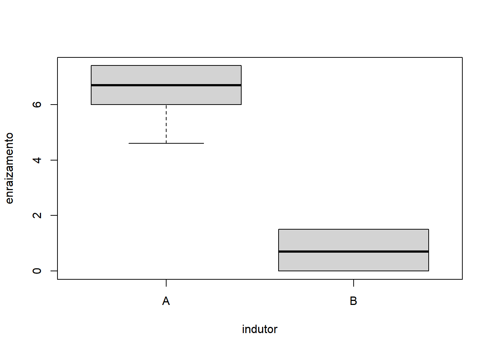
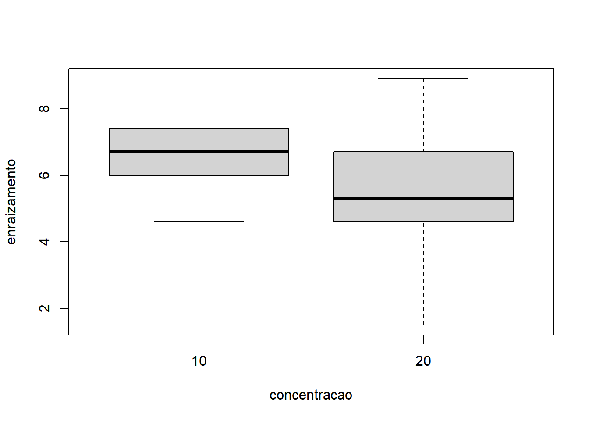
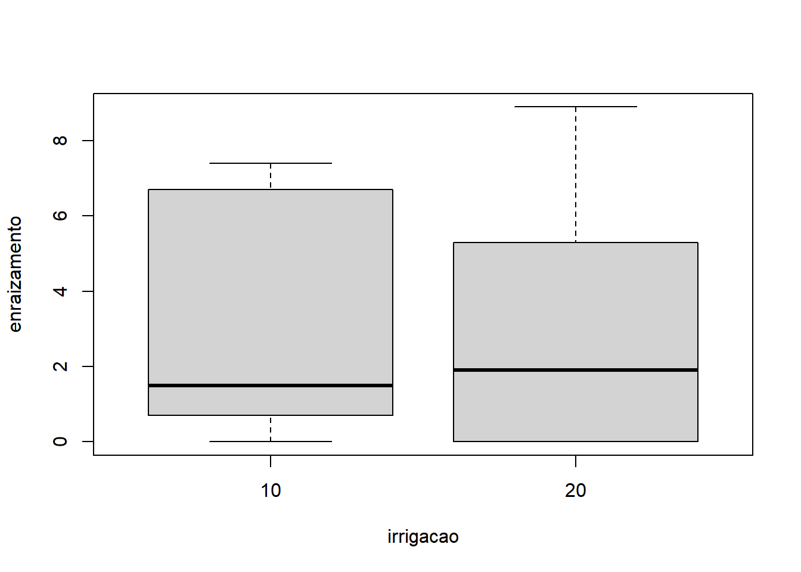
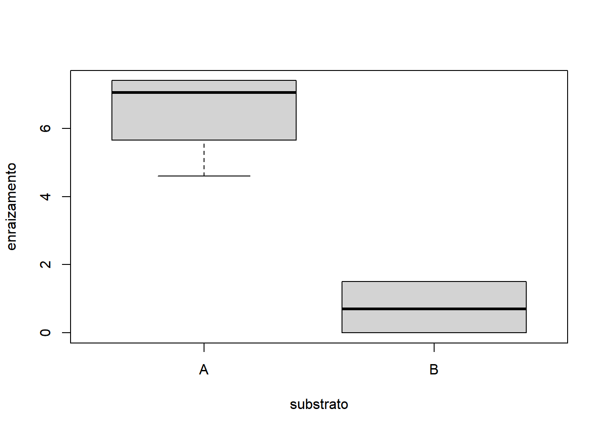
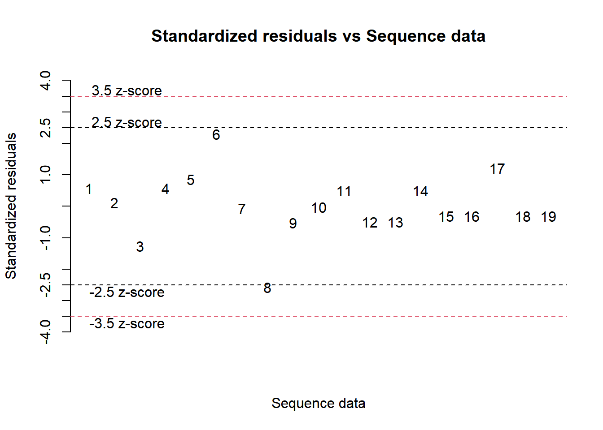

Cap. 8 Fatorial duplo inteiramento casualizado
Os experimentos fatoriais podem ocorrer de maneira inteiramente casualizados ou em blocos casualizados. No caso de um fatorial inteiramente casualizado, a ANOVA contará com quatro fontes de variação: uma fonte de variação conhecida determinada pelo tratamento A, outra fonte de variação conhecida determinada pelo tratamento B, outra fonte de variação conhecida determinada pela interação entre os dois tratamentos e uma quarta fonte de variação desconhecida determinada pelo resíduo. O modelo estatístico do delineamento fatorial duplo inteiramente casualizado é:
\[Y = \bar{X} + TRAT A + TRAT B + (TRAT A * TRAT B) + Erro\]
A análise começa pela determinação das somas de quadrados total, composta pela soma de quadrados do fator 1, pela soma de quadrados do fator 2, pela soma de quadrados da interação dos dois fatores e pela soma de quadrados do resíduo. Em seguida, calculam-se os quadrados médios do fator 1, fator 2, interação e do resíduo. A estatística F será computada para cada um dos fatores, bem como sua interação. Se F calculado for superior ao F tabelado, assume-se que existe um efeito devido ao respectivo fator (ou interação), ao passo que se F calculado for inferior ao F tabelado, não há evidências suficientes para rejeitar a hipótese nula, aceitando-se a hipótese de que não existe efeito do fator (ou da interação). Sendo a interação significativa, parte-se direto para o desdobramento de um fator dentro do outro. Apenas no caso de interação não significativa, considera-se o desdobramento dos fatores isolados.
8.1 O caso balanceado
Neste exemplo de delineamento inteiramente casualizado em esquema fatorial observa-se um experimento que avaliou o efeito de dois indutores de enraizamento em duas concentrações no enraizamento de estacas de uma espécie de árvore nativa do cerrado brasileiro. Os dados podem ser resumidos através dos seguintes tópicos:
- Fator 1: indutor A e indutor B
- Fator 2: Dose 10 e 20%
- 5 repetições
- Variável de interesse: número médio de raízes
| indutor | concentracao | rep | enraizamento |
|---|---|---|---|
| A | 10 | 1 | 7.4 |
| A | 10 | 2 | 6.7 |
| A | 10 | 3 | 4.6 |
| A | 10 | 4 | 7.4 |
| A | 10 | 5 | 6.0 |
| A | 20 | 1 | 6.7 |
| A | 20 | 2 | 8.9 |
| A | 20 | 3 | 5.3 |
| A | 20 | 4 | 1.5 |
| A | 20 | 5 | 4.6 |
| B | 10 | 1 | 0.7 |
| B | 10 | 2 | 1.5 |
| B | 10 | 3 | 0.0 |
| B | 10 | 4 | 0.0 |
| B | 10 | 5 | 1.5 |
| B | 20 | 1 | 0.0 |
| B | 20 | 2 | 0.0 |
| B | 20 | 3 | 2.3 |
| B | 20 | 4 | 0.0 |
| B | 20 | 5 | 0.0 |
O primeiro passo é importar o arquivo contendo os resultados do experimento para dentro do R. Esta tarefa pode ser realizada através do seguinte comando:
Antes da análise estatística, exploram-se os dados através dos gráficos boxplot() ou plot(). Com base nos dados do experimento em questão, vamos analisá-lo através de uma série de gráficos boxplot. Embora a concentração seja uma variável contínua, este fator possui apenas dois níveis e portanto não é suficiente para considerar uma análise de tendência utilizando regressão.
- Considerando apenas fator 1:
- Considerando apenas fator 2:
- Interação dos fatores:
- Fixando concentracao igual a 10:

- Fixando concentracao igual a 20:

- Fixando Indutor igual a ‘A’:

- Fixando Indutor igual a ‘B’:
Com base nos gráficos, é razoável apontar que o fator Indutor apresentou maior variação do que o fator Concentração. A interação também não parece influenciar o comportamento já identificado pelos fatores, quando analisados isoladamente.
A função do pacote ExpDes.pt para análise deste tipo de experimento é a fat2.dic(). A sintaxe desta função é:
fat2.dic(fator1, fator2, resp, quali = c(TRUE, TRUE),
mcomp = "tukey", fac.names = c("F1", "F2"),
sigT = 0.05, sigF = 0.05)Ajustando com base nos dados do experimento, o comando fica:
require(ExpDes.pt)
fat2.dic(fatDIC1$indutor, fatDIC1$concentracao,
fatDIC1$enraizamento, quali = c(TRUE, TRUE),
fac.names = c("Indutor", "Concentração"))## ------------------------------------------------------------------------
## Legenda:
## FATOR 1: Indutor
## FATOR 2: Concentração
## ------------------------------------------------------------------------
##
##
## Quadro da analise de variancia
## ------------------------------------------------------------------------
## GL SQ QM Fc
## Indutor 1 140.981 3 54.000
## Concentração 1 2.113 4 0.809
## Indutor*Concentração 1 0.684 2 0.262
## Residuo 16 41.772 5
## Total 19 185.550 1
## Pr>Fc
## Indutor 0.00000
## Concentração 0.38171
## Indutor*Concentração 0.61562
## Residuo
## Total
## ------------------------------------------------------------------------
## CV = 49.64 %
##
## ------------------------------------------------------------------------
## Teste de normalidade dos residuos (Shapiro-Wilk)
## valor-p: 0.144
## De acordo com o teste de Shapiro-Wilk a 5% de significancia, os residuos podem ser considerados normais.
## ------------------------------------------------------------------------
##
## Interacao nao significativa: analisando os efeitos simples
## ------------------------------------------------------------------------
## Indutor
## Teste de Tukey
## ------------------------------------------------------------------------
## Grupos Tratamentos Medias
## a A 5.91
## b B 0.6
## ------------------------------------------------------------------------
##
## Concentração
## De acordo com o teste F, as medias desse fator sao estatisticamente iguais.
## ------------------------------------------------------------------------
## Niveis Medias
## 1 10 3.58
## 2 20 2.93
## ------------------------------------------------------------------------O teste Shapiro-Wilk indica que os resíduos podem ser considerados normais. Assim, o modelo estatístico é adequado e os demais resultados podem ser considerados e analisados. A interação foi não significativa, e portanto os fatores devem ser analisados de forma independente. Apenas o fator Indutor foi significativo, levando então a um desdobramento dos níveis, que indica uma média do Indutor A superior à média do Indutor B.
8.2 O caso desbalanceado
Neste exemplo de delineamento inteiramente casualizado em esquema fatorial, com dados desbalanceados, tem-se um experimento para avaliar o enraizamento de dois tipos de substratos e duas intensidades de irrigação. Infelizmente, uma das bandejas de enraizamento foi contaminada com fungo e portanto foi considerada perdida. Por isto, este é um exemplo de experimento desbalanceado. Os dados podem ser resumidos através dos seguintes tópicos:
- Fator 1: substrato A e B
- Fator 2: intensidade de irrigação 10 mm e 20 mm
- 5 repetições
- Informação perdida: Repetição 5 do substrato A, intensidade de irrigação 10 mm
- Variável de interesse: número médio de raízes
| substrato | irrigacao | rep | enraizamento |
|---|---|---|---|
| A | 10 | 1 | 7.4 |
| A | 10 | 2 | 6.7 |
| A | 10 | 3 | 4.6 |
| A | 10 | 4 | 7.4 |
| A | 20 | 1 | 6.7 |
| A | 20 | 2 | 8.9 |
| A | 20 | 3 | 5.3 |
| A | 20 | 4 | 1.5 |
| A | 20 | 5 | 4.6 |
| B | 10 | 1 | 0.7 |
| B | 10 | 2 | 1.5 |
| B | 10 | 3 | 0.0 |
| B | 10 | 4 | 0.0 |
| B | 10 | 5 | 1.5 |
| B | 20 | 1 | 0.0 |
| B | 20 | 2 | 0.0 |
| B | 20 | 3 | 2.3 |
| B | 20 | 4 | 0.0 |
| B | 20 | 5 | 0.0 |
O primeiro passo é importar o arquivo contendo os resultados do experimento para dentro do R. Esta tarefa pode ser realizada através do seguinte comando:
Assim como no caso balanceado, é fundamental analisar os dados do experimento em gráficos e buscar antecipar os resultados que serão obtidos no teste estatístico. Os mesmo gráficos do exemplo balanceado podem ser utilizados:
- Considerando apenas fator 1:
- Considerando apenas fator 2:

- Interação dos fatores:

- Fixando concentracao igual a 10:

- Fixando concentracao igual a 20:

- Fixando Indutor igual a ‘A’:
- Fixando Indutor igual a ‘B’:
Os gráficos mostram que é razoável apontar que o fator substrato apresentou maior variação do que o fator irrigacao. A interação não parece influenciar o comportamento já identificado pelos fatores, quando analisados isoladamente. Sendo o nosso experimento desbalanceado, a função para rodar a ANOVA do tipo III é o ea2() (do pacote easyanova). A sintaxe da função é:
Como já mencionado, o pacote easyanova exige que os dados sejam apresentados numa forma específica contendo apenas as colunas relevantes para a análise. No caso de um experimento fatorial duplo inteiramente casualizado, a ordem esperada das colunas é:
- Fator A
- Fator B
- Variável resposta
Considerando as colunas substrato, irrigacao e enraizamento do dataframe fatDIC2. Os demais parâmetros da função ea2() serão definidos como design = 1 e plot = 2.

A saída da função ea2() é uma lista contendo os seguintes resultados:
## [1] "Analysis of variance"
## [2] "Adjusted means (factor 1)"
## [3] "Multiple comparison test (factor 1)"
## [4] "Adjusted means (factor 2)"
## [5] "Multiple comparison test (factor 2)"
## [6] "Adjusted means (factor 1 in levels of factor 2)"
## [7] "Multiple comparison test (factor 1 in levels of factor 2)"
## [8] "Adjusted means (factor 2 in levels of factor 1)"
## [9] "Multiple comparison test (factor 2 in levels of factor 1)"
## [10] "Residual analysis"A lista acima contém os seguintes resultados:
- Análise de variância
- Comparação de médias do fator 1
- Teste de comparação múltipla do fator 1
- Comparação de médias do fator 2
- Teste de comparação múltipla do fator 2
- Comparação de médias do fator 1 dentro dos níveis do fator 2
- Teste de comparação múltipla do fator 1 dentro dos níveis do fator 2
- Comparação de médias do fator 2 dentro dos níveis do fator 1
- Teste de comparação múltipla do fator 2 dentro dos níveis do fator 1
- Análise das pressuposições
A primeira saída que deve ser verificada é a análise das pressuposições, na posição 10 da lista:
## $`Residual analysis`
## $`Residual analysis`$`residual analysis`
## values
## p.value Shapiro-Wilk test 0.2084
## p.value Bartlett test (factor_1) 0.0146
## p.value Bartlett test (factor_2) 0.0610
## p.value Bartlett test (treatments) 0.0765
## coefficient of variation (%) 53.5100
## first value most discrepant 8.0000
## second value most discrepant 6.0000
## third value most discrepant 3.0000
##
## $`Residual analysis`$residuals
## 1 2 3 4 5 6
## 0.875 0.175 -1.925 0.875 1.300 3.500
## 7 8 9 10 11 12
## -0.100 -3.900 -0.800 -0.040 0.760 -0.740
## 13 14 15 16 17 18
## -0.740 0.760 -0.460 -0.460 1.840 -0.460
## 19
## -0.460
##
## $`Residual analysis`$`standardized residuals`
## 1 2 3
## 0.57590514 0.11518103 -1.26699130
## 4 5 6
## 0.57590514 0.85563049 2.30362055
## 7 8 9
## -0.06581773 -2.56689147 -0.52654184
## 10 11 12
## -0.02632709 0.50021475 -0.48705120
## 13 14 15
## -0.48705120 0.50021475 -0.30276156
## 16 17 18
## -0.30276156 1.21104623 -0.30276156
## 19
## -0.30276156O teste de normalidade Shapiro-Wilk indica que não há evidência suficientes para rejeitar a pressuposição de normalidade do modelo estatístico e portanto, este é adequado para representar o experimento analisado. Desta forma, a análise de variância contido na posição 1 da lista de resultados pode ser analisado:
## $`Analysis of variance`
## df type III SS
## factor_1 1 135.3243
## factor_2 1 2.3224
## factor_1:factor_2 1 0.8400
## residuals 15 41.5515
## mean square F value
## factor_1 135.3243 48.8518
## factor_2 2.3224 0.8384
## factor_1:factor_2 0.8400 0.3032
## residuals 2.7701 -
## p>F
## factor_1 <0.001
## factor_2 0.3743
## factor_1:factor_2 0.59
## residuals -O fator 1 (Indutor) foi significativo, apresentando teste F inferior a 1%. Já o fator 2 (Concentração), bem como a interação não foram significativas. Como a interação não foi significativa, não há necessidade de desdobramento, e o fator 1 - Indutor pode ser analisado diretamente. Lembrando que no exemplo apresentado, o fator 1 possui apenas dois níveis e portanto o teste F é conclusivo. De qualquer maneira, o teste de médias do fator 1 pode ser obtido na posição 2 da lista de resultado.
## $`Adjusted means (factor 1)`
## factor_1 adjusted.mean standard.error
## 1 A 5.9625 0.5582
## 2 B 0.6000 0.5263
## tukey snk duncan t scott_knott
## 1 a a a a a
## 2 b b b b b